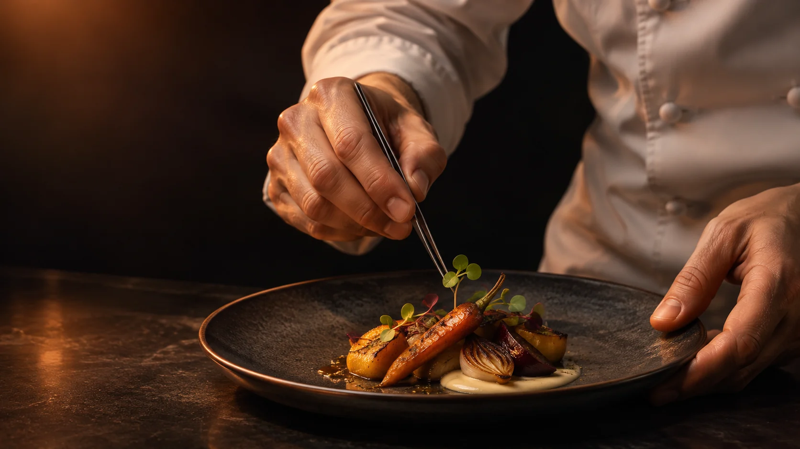

Transport ins All.
Falcon 9 und Falcon Heavy im Betrieb; Starship als nächste Entwicklungsstufe.
STARSHIP · FLUG 15
Zum ersten Mal kehrt ein Starship aus dem All zurück und wird vom Startturm gefangen.
ELON MUSK · GRÜNDER VON SPACEX
“There’s a silly notion that failure is not an option at NASA. Failure is an option here. If things are not failing, you are not innovating enough.”
EINE MISSION, DIE GESCHÄFTE VERBINDET
SpaceX will den Zugang zum All erweitern. Daraus ist ein Unternehmen für Raumfahrt, weltweite Konnektivität und künstliche Intelligenz entstanden.
Wiederverwendbare Raketen, Satellitennetze und schnelle Lernschleifen bilden den Ausgangspunkt unserer Analyse: Wie wird aus technologischer Stärke die nächste tragfähige Geschäftsidee?
Die Innovationskraft bewertenDrei berichtete Segmente seit Q1 2026 · Darstellung des Geschäftsmodells
Von der Raumfahrtmission zum Infrastrukturunternehmen.
Konzernumsatz einschließlich der rückwirkenden Konsolidierung von xAI und X.
Abonnenten weltweit am Ende des zweiten Quartals.
Falcon 9 und Falcon Heavy im Betrieb; Starship als nächste Entwicklungsstufe.
Starlink macht Satelliteninfrastruktur zu einem globalen Breitbandgeschäft.
KI erweitert das Unternehmen um digitale Infrastruktur und neue Anwendungen.
SpaceX wurde 2002 gegründet; der Hauptsitz liegt in Starbase, Texas. Der IPO-Prospekt nennt mehr als 22.000 Vollzeitbeschäftigte zum 31. März 2026. Die Aktie wird seit dem 12. Juni 2026 gehandelt. Die Website verwendet feste Berichtsstände, keine Live-Kennzahlen.
| Kennzahl | Wert | Zeitraum |
|---|---|---|
| Konzernumsatz | 18,674 Mrd. USD | 2025 |
| Nettoergebnis des Konzerns | −4,937 Mrd. USD | 2025 |
| Umsatz des Segments Connectivity | 11,387 Mrd. USD | 2025 |
| Operatives Ergebnis von Connectivity | +4,423 Mrd. USD | 2025 |
| Starlink-Abonnenten | 12,0 Mio. | 30. Juni 2026 |
Die historischen Konzernzahlen wurden im Prospekt rückwirkend einschließlich xAI und X zusammengeführt. Nettoergebnis und operatives Segmentergebnis sind unterschiedliche Kennzahlen. Die Präsentationsvorlage nennt noch 10,3 Mio. Starlink-Abonnenten; diese Zahl gehört zum 31. März 2026 und wurde hier auf den ebenfalls verlinkten Q2-Bericht aktualisiert.
Projektgrundlage: Step 1_Firmenvorstellung_Step 7_Empfehlungen.pptx, Folien 2–3. Die Innovationsprojekte aus Folien 4–7 werden in Schritt 2 eingeordnet.
Die Technologie ist beeindruckend. Jetzt machen wir ihr Potenzial vergleichbar.
↓Wir prüfen drei Vorhaben im Starship-System und Starlink als Vergleich. Die Team- und KI-Bewertung zeigen: Die gewählten Maßstäbe entscheiden darüber, was als Innovation zählt.
Raptor 3 liegt vorn. Entscheidend sind der eingeschätzte Reifegrad und der breiter bewertete Nutzen. Die KI setzt andere Schwerpunkte.
Starlink erhält im Team Reifegrad 0, weil der Betrieb bereits etabliert ist. Die Null im Produkt ist eine Eigenschaft dieser Methode – kein Urteil über den wirtschaftlichen Erfolg.
Technologie schafft Möglichkeiten. Trends zeigen, wo neue Bedürfnisse entstehen.
↓Acht Trends wirken auf SpaceX. Alle verlangen Aufmerksamkeit, aber mit unterschiedlicher Stärke und Nähe. Das differenzierte Portfolio macht genau diese Unterschiede sichtbar.
EINFLUSS ↑ 1–5
HANDLUNGSDRUCK → DAUER + NÄHE
Nummern auswählen · Grenzen: Druck ≥ 6 und Einfluss ≥ 3.
× zeigt mehrere Trends an derselben Position. Durchklicken oder unten auswählen.
Ideen aus
acht Trends
Trend-Favoriten
+ Open Innovation
Kandidaten für
den Business Case
DIE VORAUSWAHL
Je Trend wählen wir eine Idee nach Problem, Zahlungsbereitschaft und dem Beitrag von SpaceX. Vier weitere Ideen aus Open Innovation ergänzen das Feld. Die zwölf Konzepte ordnen wir nach Machbarkeit und Originalität ein.
ORIGINALITÄT ↑
Punkte auswählen · × = mehrere Ideen, durchklicken.
Skala 1–5 · Hoch ab 4. Die Einschätzung ersetzt keinen Machbarkeitsnachweis.
DREI KONZEPTE, DIE WIR VERTIEFEN

UNSER PITCH-CASE · ROCKETLIGHT DINNER
Zehn Zweiertische für maximal 20 Gäste. Sieben Gänge. Versetzte Reihen und zum Startfeld gerichtete Plätze. Ein kuratierter Abend rund um einen Raketenstart. Der Unterschied liegt in Gastronomie, Inszenierung und persönlicher Begleitung.
Sichtachse, Entfernung und Startzugang werden erst nach der Standort- und Sicherheitsfreigabe festgelegt.
Das Dinner-Konzept erkundenRocketLight fasziniert. Jetzt muss sich die Idee an Nutzen, Aufwand und Zahlen messen lassen.
↓Für RocketLight spricht der hohe Nutzen. Offen bleibt, ob sich der Aufwand für Sicherheit, Genehmigungen und Startfenster bewältigen lässt.
Der Aufwand entscheidet. Sicherheit, Genehmigungen und der Zugang zu Startfenstern entscheiden. Deshalb ist ein gestufter Pilot der nächste Schritt.
IR = NUTZEN / AUFWANDBewertungsscore, keine finanzielle RenditeVARIANTE A · PLANUNG 2027—2031
Vier Pilot-Dinner eröffnen den Weg zu 24 Events im Jahr. Die Planung setzt 20 Plätze und nach der Pilotphase 90 % Auslastung voraus.
Planannahme · noch zu validierenDies ist die Kalkulation des Pavillons.
Den vollständigen Kalkulator öffnen
TREND2BUSINESS · GRUPPE 2
Ein Sterne-Dinner. Ein Raketenstart.
Eine Idee, die beides zusammenbringt.
VON DER IDEE ZUM STARTProdukt, Arbeitsweise, Entscheidung
Vermögende Raumfahrtfans suchen besondere Erlebnisse. Unternehmen suchen einen außergewöhnlichen Rahmen für ihre wichtigsten Kunden und Führungskräfte. RocketLight verbindet beide Bedürfnisse mit einem Abend für maximal 20 Gäste.
Einladung, persönliche Betreuung und ausgewählte Vermittler schaffen den Zugang. Der Pilot soll zeigen, ob Gäste das Erlebnis zu diesem Preis buchen und weiterempfehlen.
Je Gast · Preisannahmen, im Pilot zu prüfen
Die fünf Ps beschreiben den finalen Konzeptvorschlag. Preise, Flächen, Partner und Ersatztermine brauchen vor der Umsetzung eine Bestätigung.
Zielgruppe
Sehr vermögende Privatkunden und Raumfahrtfans. Hinzu kommen Unternehmen für exklusive Executive- und Customer-Hospitality-Events.
Typischer Gast
Vermögende Unternehmer oder Führungskräfte mit ausgeprägtem Interesse an Technologie, Raumfahrt und besonderen Erlebnissen.
Was bisher fehlt
Klassische Luxusangebote bieten wenig Neues. Öffentliches Launch-Viewing bietet wenig Exklusivität und lässt sich bei Startverschiebungen schwer planen.
Zugang
Einladung und kuratierte Warteliste. Vermittlung über Family Offices, Private Banking, Luxusreise-Anbieter und Corporate Hospitality.
Werte und Trends
Experience Economy, New Space und Personalisierung. Im Mittelpunkt stehen Exklusivität und Zugang zu Erlebnissen, die sonst schwer erreichbar sind.
Das Erlebnis
Premium-Dinner für maximal 20 Gäste rund um einen realen Raketenstart, mit Missionsbriefing und begleitetem Launch-Erlebnis.
Die Gestaltung
Ein hochwertiger temporärer Launch-Pavillon mit Panoramablick. Raumfahrt und Mission prägen das Design zurückhaltend.
Wenn sich der Start verschiebt
Das Dinner findet weiterhin statt. Zusätzlich ist bevorzugter Zugang zu einem klar definierten Ersatztermin vorgesehen. Bedingungen, Kosten und Versicherbarkeit sind noch zu prüfen.
Qualität
Fine Dining, ein hoher Betreuungsschlüssel, persönlicher Concierge-Service und ein kuratiertes Raumfahrtprogramm.
Das Gesamtpaket
Dinner, Launch-Erlebnis, Concierge, Erinnerungsstücke sowie ein personalisiertes Foto- und Videopaket.
Preis
Prestige Pricing mit 35.000 USD je Gast im Pilot und einem langfristigen Zielpreis von bis zu 50.000 USD. Die Zahlungsbereitschaft muss der Pilot bestätigen.
Vorteile für wiederkehrende Gäste
Zusatzleistungen und bevorzugter Zugang zu neuen Terminen. Klassische Preisrabatte sind nicht vorgesehen.
Bezahlung
Eine hohe Anzahlung reserviert den Platz, die Restzahlung erfolgt vor dem Event. Die genaue Quote wird nach der Kostenplanung festgelegt.
Preispositionierung
Kein Price Matching. Das Angebot wird über seine Einzigartigkeit positioniert.
Zahlungsbedingungen
Privatkunden zahlen im Voraus. Für geprüfte Firmenkunden sind individuelle Bedingungen vorgesehen. Diese Konditionen sind noch festzulegen.
Vertrieb
Selektiver Direktvertrieb, ergänzt durch Family Offices, Private Banking, Luxusreise-Anbieter und Corporate Hospitality.
Logistik
Ein temporäres Eventkonzept nahe ausgewählter Launch-Standorte. Ein Premium-Transfer kann optional oder Teil des Pakets sein. Die Ausgestaltung bleibt zu prüfen.
Betreuung
Ein persönlicher Concierge begleitet die Gäste von der Buchung bis zur Abreise und informiert proaktiv über Änderungen des Startfensters.
Standort
Ausgewählte Flächen nahe relevanter SpaceX-Launch-Sites in den USA. Die konkrete Fläche steht erst nach Sicherheits- und Standortfreigabe fest.
Ausbau
Zunächst ein begrenzter Pilot in den USA. Eine Ausweitung setzt erfolgreiche Nachfrage- und Machbarkeitsprüfungen voraus.
Kooperationen
Ausgewählte Premiummarken aus Uhren, Automotive, Aviation oder Fine Dining. Interesse, Konditionen und Markenfit sind zu prüfen. Zusagen liegen dem Konzept nicht zugrunde.
Werbung
Gezieltes Storytelling in ausgewählten Luxus-, Wirtschafts- und Raumfahrtmedien.
Pressearbeit
Ein Pilot-Event mit ausgewählten Medien und Meinungsbildnern. Geschichten rund um Raumfahrt und Hospitality geben dem Erlebnis ein Gesicht.
Die Botschaft
„RocketLight – Dinieren, wenn die Zukunft abhebt.“ Ein exklusives Fine-Dining-Erlebnis für maximal 20 Gäste rund um einen realen Raketenstart.
Kanäle
Medienberichte, Partnernetzwerke, hochwertige Videos, persönliche Empfehlungen und Einladungen.
Fable, ChatGPT und Copilot bearbeiteten denselben Prompt und dieselben 25 Felder. Das Team verglich die Vorschläge auf einer relativen Skala von 1 (schwach) bis 5 (sehr stark). Die Werte dokumentieren die Qualitätseinschätzung der Entwürfe und sind keine Marktvalidierung.
| Entwurf | People | Product | Price | Place | Promotion | Mittelwert |
|---|---|---|---|---|---|---|
| Fable | 5 | 5 | 4 | 3 | 5 | 4,4 |
| ChatGPT | 4 | 4 | 4 | 3 | 4 | 3,8 |
| Copilot | 4 | 5 | 3 | 5 | 4 | 4,2 |
Fable liefert die konkreteste Zielgruppe, Produktinszenierung und Promotion. Seine Annahmen zu Standorten und Entfernungen wirken teilweise zu verbindlich. ChatGPT ist vollständig und gut lesbar, bleibt inhaltlich aber nahe an Fable. Copilot überzeugt beim Pilotansatz und im Umgang mit offenen Standortfragen, bleibt beim Preis weniger konkret.
Der finale Mix verbindet die konkreten Produktideen mit dem vorsichtigeren Pilotansatz. Persona und Standort bleiben bewusst offen genug für die Prüfung. Preis, Ersatztermine, Partner und Zahlungsbedingungen werden vor der Umsetzung validiert.
Grundlage: finale 5P-Ausarbeitung, Blätter „Finaler 5P-Mix“, „KI-Vergleich“ und „Annahmen & Abgabe-Check“.
Ein fester Pavillon in Florida bildet den Anfang. Vier Pilot-Dinner prüfen den Betrieb vor Ort. Langfristig soll ein zweiter eigenständiger Standort in Texas folgen, mit eigener Bauplanung und Investitionsfreigabe.
Florida zuerst, Texas langfristig
FLORIDA · TEXAS
Der erste Standort bleibt in Florida. Der zweite feste Bau in Texas erhält eine eigene Planung, Finanzierung und Freigabe.
Die 10–15 Mio. USD stammen aus einer bestehenden Grobschätzung für eine größere Lounge. Für den festen Pavillon in Florida müssen Bauumfang und Kosten neu validiert werden. Der zweite Standort in Texas benötigt ein separates, bisher nicht kalkuliertes Budget.
Planstand 20.11.2026. Termine und Freigaben sind Planannahmen; Dinner hängen zusätzlich von geeigneten Startfenstern ab. Investition und Wirtschaftlichkeit der festen Standorte werden gesondert geprüft. Die bestehende Finanzrechnung beschreibt den früheren mobilen Konzeptstand.
Wir konzentrieren uns im ganzheitlichen Innovationsmanagement auf ein Feld: Kompetenzen. Damit Wissen bei SpaceX bleibt, auch bei hoher Fluktuation, schlagen wir drei Ideen vor.
KOMPETENZEN
Mitarbeitende wechseln für drei bis sechs Monate zwischen Bereichen wie Starship, Starlink und SpaceXAI.
PERSPEKTIVEN WECHSELNKOMPETENZEN
Ein Format zum Wissensaustausch: Teams teilen Erkenntnisse und Erfahrungen in lockerer Runde.
WISSEN TEILENKOMPETENZEN
Erfahrene und neue Mitarbeitende lernen voneinander.
VONEINANDER LERNENDie drei Triebwerke visualisieren drei Ansätze. Sie bilden keine technische Konfiguration eines realen Raumfahrzeugs ab.
Drei Triebwerke stehen bereit. Vor dem Start laden wir Sie zu einer ersten Wahl ein.
↓Das Publikum bucht über einen QR-Code eines von drei Menüs. Die Auswertung zeigt die Buchungen der letzten 30 Minuten live. Ohne Verbindung zum Pitch-Server erscheinen gekennzeichnete Beispieldaten.
Die drei Menüs Falcon, Odyssey und Starlight stammen aus dem Konzept der Arbeitsansicht. Die Wahl zeigt Interesse und ist kein Beleg für zahlungsbereite Nachfrage. Gespeichert werden nur Spitzname, Avatar, Menü und Extras für 30 Minuten.
ACHT SCHRITTE. EIN MOMENT.
Dinieren, wenn die Zukunft abhebt.
Oder weiter scrollen.
Der Moment beginnt
Scrollen oder den Start erleben.
Aufnahme: NASA · Eigenes Sounddesign